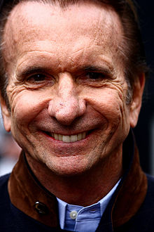
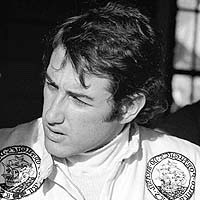
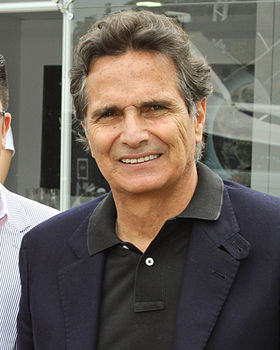
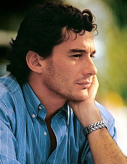
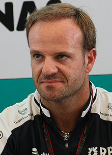
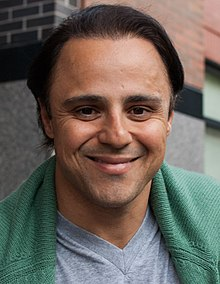

O Brasil é um dos paises onde o esporte mais se popularizou.
Um dos nomes que trouxeram o esporte para o conhecimento dos brasileiro foi Emerson Fittipaldi, o primeiro campeão brasileiro na F1, ele ganhou 2 títulos.
Ele e seu irmão Wilson Fittipaldi, foram os responsaveis pela criação da Coppersucar Fittipaldi, a equipe brasileira de maior sucesso na F1.
Considerado um dos pilotos brasileiros mais promissores na F1, José Carlos Pace, teve sua única vitória em Interlagos, em 1975, propocinando o primeiro 1-2 do Brasil na F1; infelizemente veio a falecer em março de 1977, em um acidente na Serra da Cantareira. O autódromo de Interlagos foi renomeado para José Carlos Pace em sua homenagem
O tricampeão foi um responsaveis a tornar os olhos do público brasileiro a F1 nos anos 80. É conhecido como um gênio maluco da mecânica, sendo um dos responsaveis pelo sistema de resfriamento dos freios dos carros à aguá, permitindo que corresse com o carro abaixo do peso permitido pelo regulamento, pois o peso da aguá também contava na pesagem pre-corrida mas durante a corrida se livrava do peso, ele também foi responsavel por muitos outros sistemas na F1, dos quais muitos persistem até hoje.
Senna considerado por muito o maior piloto de F1 de todos os tempos, estreiou em 1984 pela Tolleman onde teve 3 pódios já no seu ano como Rookie. Em seu segundo ano obteve sua primeira vitória no circuito do Estoril, em Portugal, pela Lotus.
Já pela McLaren, em 1988, em Mônaco deu a considerada melhor volta do circuito histórico, se qualificando 1.427s para Alain Prost seu companheiro de equipe e 2° colocado, infelizemente ele abandonou a corrida na volta 66 ao bater; ainda em 88 teve seu primeiro título.
Protagonizou uma das maiores rivalidade dos esporte juntamente com Alain Prost, tendo o ápice da rivalidade em Suzuka, no Japão, em 1989 com Prost Jogou o carro no carro de Senna para garantir seu título, o mesmo ocorreu no ano seguinte mas desta vez foi Senna que causou a colizão.
Em 1991, teve um dos momentos mais marcantes de sua carreira ao vencer em Interlagos, sua primeira vitória em casa, finalizando a corrida apenas com a 6° marcha. No mesmo ano obteve seu 3° e último título.
Infelizemente veio à falecer em 1° de maio de 1994 em Ímola, na Itália, ao bater na curva Tamburello, mesma curva em que Rubens Barrichello havia batido dois dias antes e que levou ao falecimento de Roland Ratzenberger um dia antes.
Senna até hoje é comparado Michael Schumacher e Lewis Hamilton, atualmente os dois possuem 7 títulos mundias
O Brasil não teve mais pilotos de tanta relevância quanto os citados a cima na F1, mas valem apena citar Rubens Barrichello e Felipe Massa, os dois pilotos durante suas carreiras disputaram o título mundial, terminado em segundo lugar.
Foi o primeiro brasileiro a disputar o título mundial de F1, após Senna, era considerado escudeiro de Michael Schumacher; atualmente é o ex-piloto de F1 com melhores resultado no automobilismo pilotando na Stock Car.
Foi o brasileiro mais próximo de um título desde Senna, quando em 2008 ficou apenas 1 pontos atrás do campeão da temporada, Lewis Hamilton, a disputa entre os dois aconteceu até último circuito da temporada, em Interlagos, quando Hamilton ultrapassou Timo Glock na última curva do circuito. Massa é um dos pilotos que teve uma da maiores despedidas da F1, em 2016 e 2017, quando bateu em 2016, em Interlagos, sob bandeira vermelha caminhou até os boxes sendo aplaudido pelos torcedores e pelos membros do paddock.